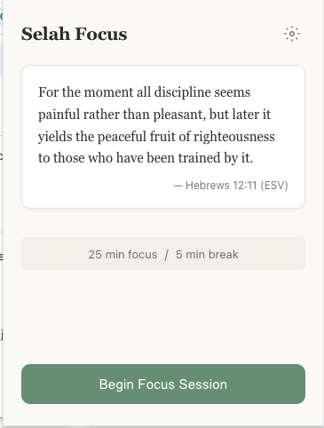
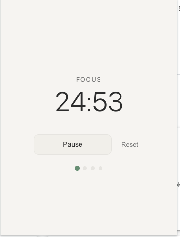
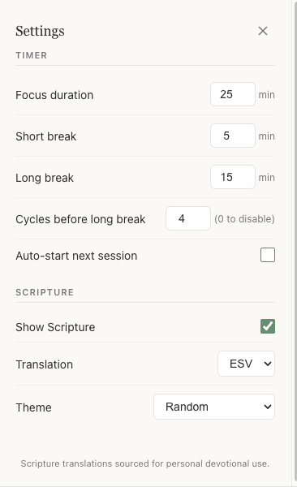
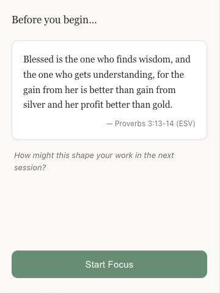

Focus deeply, anchored in the Word
A Pomodoro timer with Scripture-based focus rhythms. Combine science-backed productivity with spiritual practice to work excellently while staying grounded in faith.
In action




Customizable focus sessions, short breaks, and long breaks with auto-advance.
55 curated Bible verses with themes, reflection prompts, and multiple translations.
Adjust durations, translations, and themes. Settings sync across Chrome devices.
Desktop notifications when sessions complete and a focus badge on the icon.
Full keyboard navigation, screen reader support, WCAG 2.1 AA compliant.
No tracking. No analytics. All data stored locally on your device.